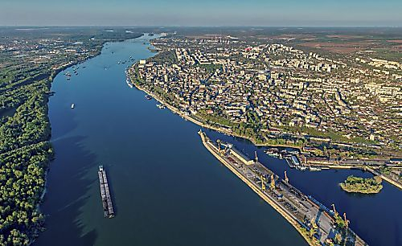
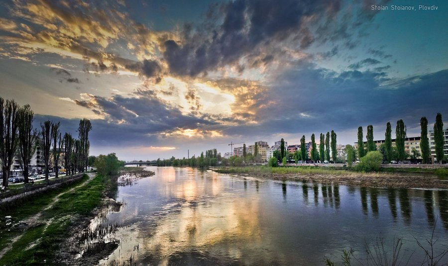
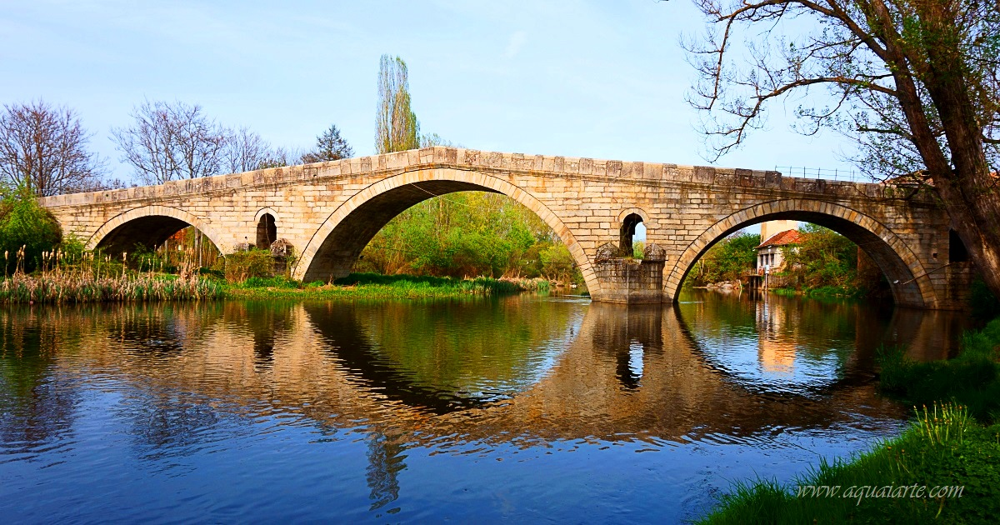
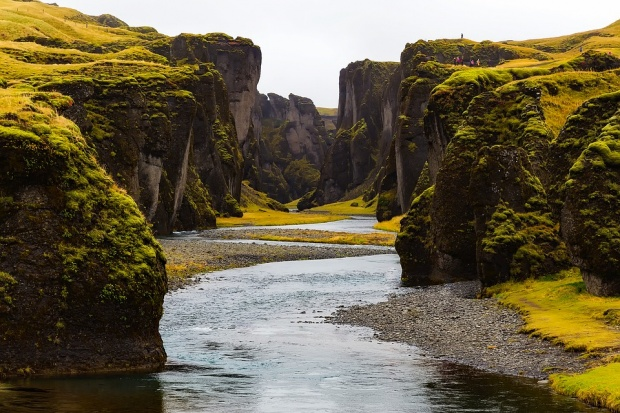
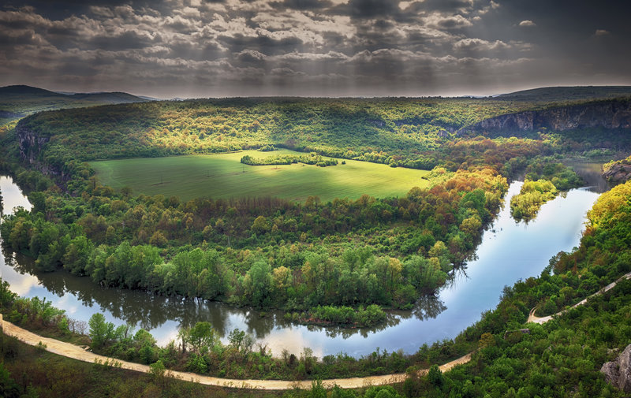
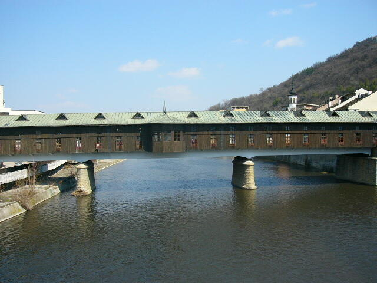
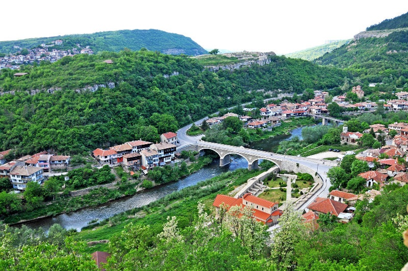

-

Дунав е втората по дължина река в Европа след Волга. Тя е единствената голяма река в Европа, която тече в посока от запад на изток и се влива в Черно море. Освен това Дунав е и единствената река в света, която протича през 10 държави (Германия, Австрия, Словакия, Унгария, Хърватия, Сърбия, България, Румъния, Молдова и Украйна.), а водосборният ѝ басейн се простира освен на териториите на горните 10 държави и на териториите на още 9 държави (Швейцария, Италия, Чехия, Полша, Словения, Босна и Херцеговина, Черна гора, Албания и Косово).
-

Марѝца е река в Южна България – минава през областите София, Пазарджик, Пловдив, Стара Загора и Хасково. След като излезе от България, реката минава последователно през североизточната част на Гърция и европейската част на Турция. Влива се в североизточната част на Бяло море. Дължината на реката е 472 km, от които на българска територия се намират 322 km и по този начин Марица е на четвърто място по дължина сред българските реки – след Дунав, Искър и Тунджа. Тя е най-дългата река, извираща от територията на България
-

Струма е река в Югозападна България, области Перник, Кюстендил и Благоевград и Северна Гърция, област Централна Македония, вливаща се в Струмския залив на Бяло море. Дължината ѝ е 415,2 km, от които на българска територия – 290 km, която ѝ отрежда 6-о място сред реките на България след Дунав, Искър, Тунджа, Марица и Осъм.
-

Тунджа е река в Южна България, области Пловдив, Стара Загора, Сливен, Ямбол и Хасково и Турция, вилает Одрин. Дължината ѝ е 390 km, от които 349,5 km на българска територия, която ѝ отрежда 3-то място сред реките на България, след Дунав и Искър. Река Тунджа е най-големият приток на Марица.
-

Искър е река в България, област София и области Софийска, Враца, Ловеч и Плевен, десен приток на река Дунав. Дължината ѝ е 368 км, заедно с река Бели Искър, която ѝ отрежда 2-ро място сред реките на България. Дължината само на река Искър е 340 км. Искър е най-дългата изцяло българска река.
-

Осъм е река в Северна България, област Ловеч – общини Троян, Ловеч и Летница и област Плевен – общини Левски и Никопол, десен приток на река Дунав. Дължината ѝ заедно с река Черни Осъм, която е приета за начало на Осъм е 314 km, която ѝ отрежда 6-о място сред реките на България. Дължината само на река Осъм е 278 km.
-

Янтра е река в Северна България, област Габрово – общини Габрово и Дряново, област Велико Търново – общини Велико Търново, Горна Оряховица и Полски Тръмбеш и област Русе – общини Бяла и Ценово, десен приток на река Дунав. Дължината ѝ е 285,5 km[1], която ѝ отрежда 7-о място сред реките на България. Река Янтра е третият по дължина приток на Дунав в България след Искър и Осъм.